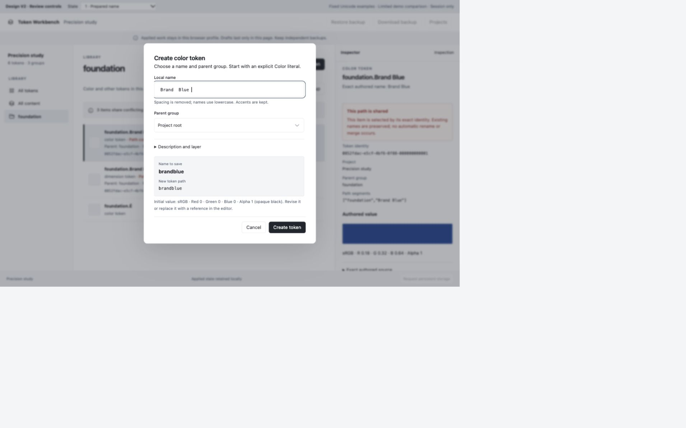
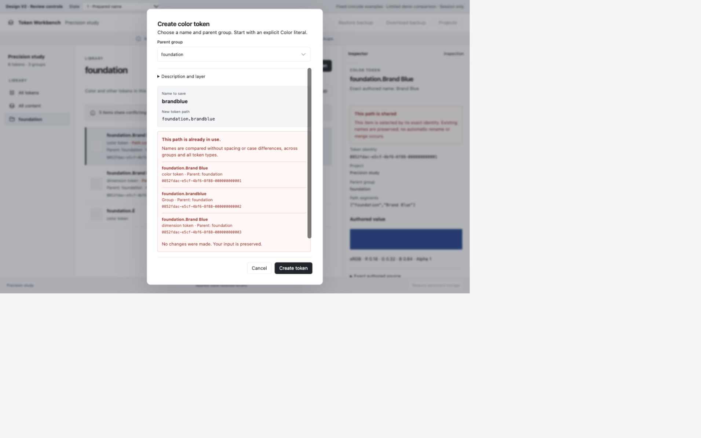
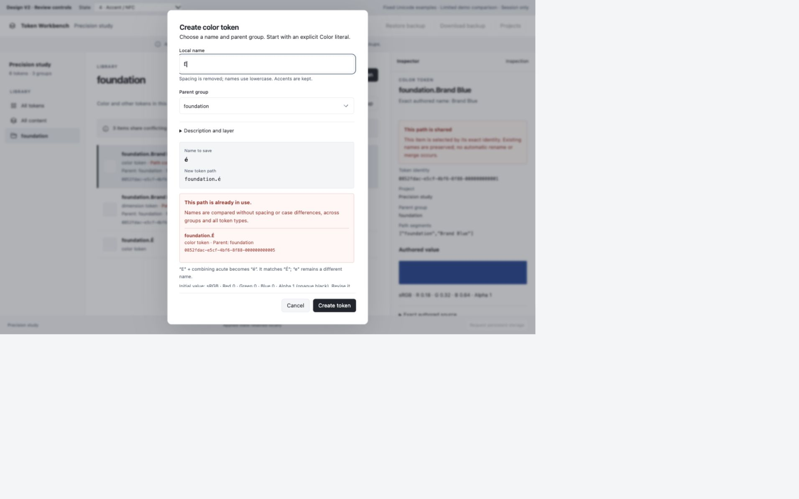
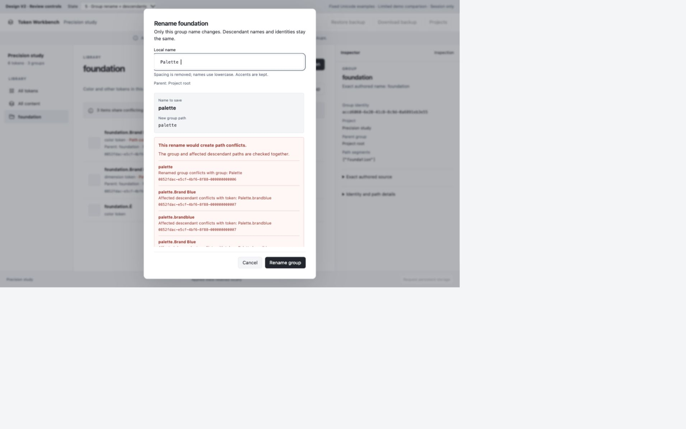
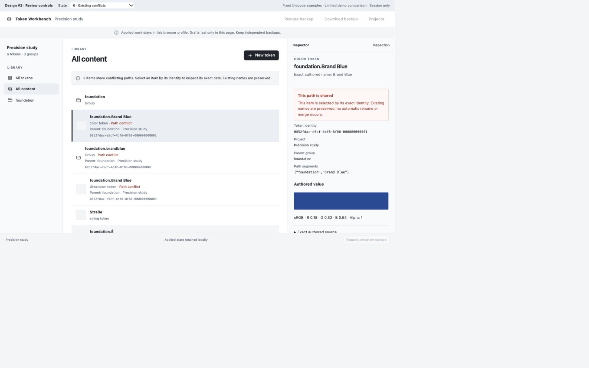
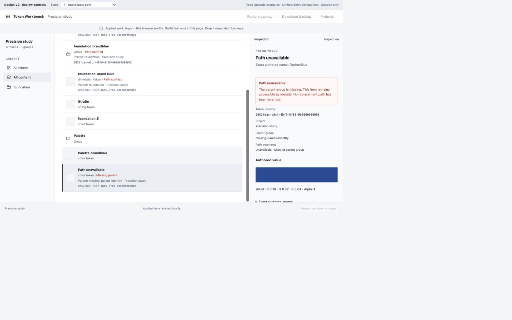
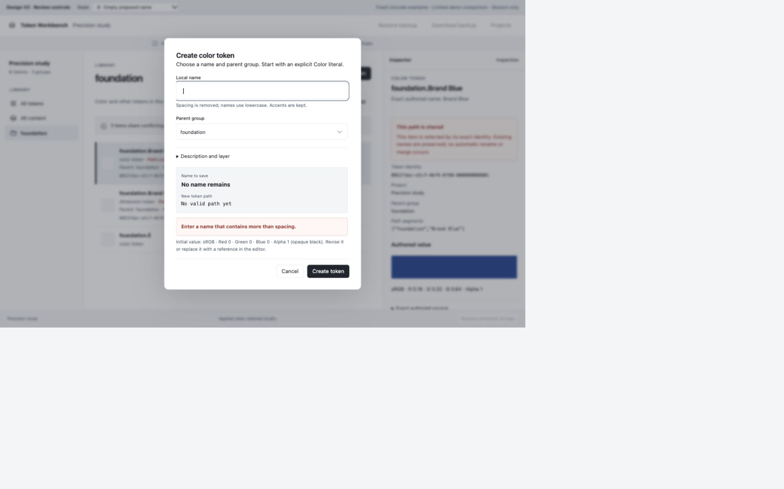
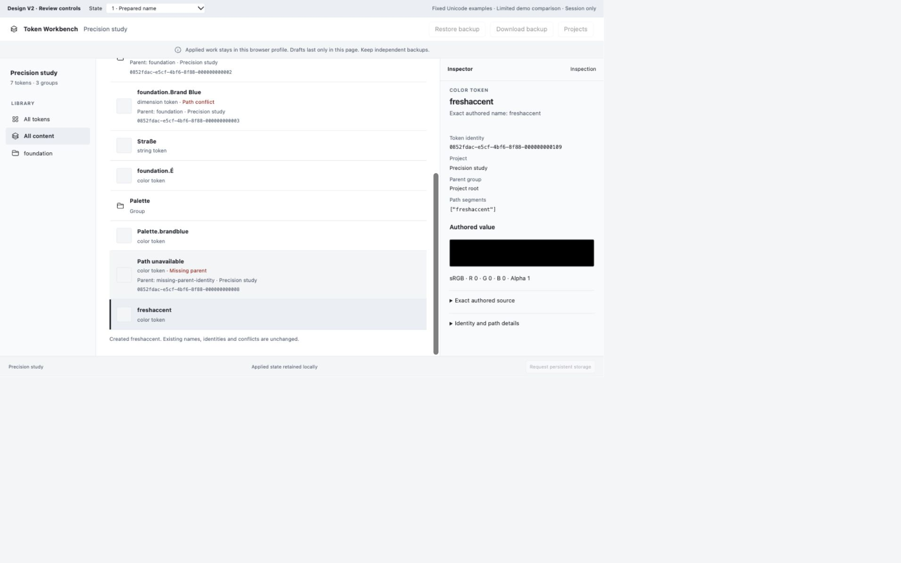

The naming policy is agreed. These mockups await user review before analyst review; no application implementation is authorized. V1 remains the reference for ordinary editor/resolution layout.
Desktop captures use a measured 1280 × 800 CSS viewport. The browser capture includes unused outer canvas caused by zoom; gallery viewports crop that canvas for reading. Original PNGs remain available.1. Prepared name The raw name remains editable; brandblue and its root path are previewed before creation. Original PNG

2. Collision rejected Case/spacing-equivalent color, dimension and group paths prevent creation. Rejection preserves input and focuses feedback; actions remain visible. Original PNG

3. Unicode case folding STRASSE prepares as strasse but conflicts with the unchanged legacy Straße name. Original PNG4. Accents and canonical equivalence Decomposed accented E prepares as é and conflicts with É. Unaccented e remains different. Original PNG

5. Group rename and descendant paths The proposed palette rename reports the group collision and affected descendant paths without changing them. Original PNG

6. Existing conflicting data Each conflicting selectable row includes its full identity and context; the inspector keeps exact authored names. Original PNG

7. Unavailable path The orphan remains selectable by identity, with missing-parent information and no invented path. Original PNG

8. Nothing remains after removal The preview states No name remains / No valid path yet. The raw spacing characters are retained. Original PNG

9. Unrelated fixture creation Fresh Accent prepares as freshaccent. The demo adds one opaque-black color token and retains the existing conflict set. This illustrates collision policy only, not structural-validation bypass. Original PNG

10. Compact navigation 1000 × 800 CSS viewport; left-edge drawer, current view and keyboard-selectable entries. Original PNG